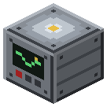

Станция слежения

Спутниковый пульт: отчёты в чат по режимам (Shift — режим), EU на запрос. Пустая карта в руке — лист-отчёт с рисунком: спутники, погода, разведка (снимок района, форты, нефть, налёт).
Станция слежения — пульт приёма спутников. Ставишь, кормишь EU IC2 (до MV), клик пустой рукой — отчёт режима, Shift + пустая рука — следующий режим (спутники, погода, разведка, телеметрия). Каждый запрос ест EU (разведка — 2000). Без нужного спутника на орбите режим молчит.
Лист-отчёт (1.56.76): клик ПУСТОЙ ванильной картой в руке — вместо текста в чат получаешь лист с рисунком режима (карта расходуется, EU как за отчёт; в чат — одна строка легенды). Лист без слов — значки и цифры; имя карты — «Разведка, день N». Копию делаешь в верстаке (лист + пустая карта), вешаешь в рамку на стену.
- Спутники: строка на тип (навигация, метео, разведка, связь), полоска на каждый спутник — суток до схода (красная — 3 и меньше).
- Погода: ближние 20 минут (игровые сутки): день/ночь, дождь, гроза; черта с числом — смена через столько минут; штриховка — дальше не известно (после смены погода держится минимум 12000 тиков — это знаем точно).
- Разведка: снимок с орбиты (цвет по биому — море, пустыня, лес, горы, снег), станция в центре, север вверху. Красный квадрат — форт с гарнизоном (рядом число бойцов), серый — зачищен; чёрный круг в белой кайме — нефть (больше — богаче), жёлтая кайма — газовая шапка; красная стрелка — откуда придёт налёт, у хвоста «ночей до налёта/сколько» (0 — сегодня). Масштаб сам: наименьший (1–16 блоков на пиксель), при котором видно всё из отчёта; шкала в углу — блоков на отрезок.
- Телеметрия: листа нет — только чат.
Карту с крестом даёт сейсмостанция: пустая карта в инвентаре + замер — крест на ловушке под ногами, иначе на ближней.
Параметры
| Эпоха | 5 — Атом и космос |
|---|---|
| Многоблок | нет |
| Привод | топка / своё |
| что делает | данные спутников: орбита, погода, разведка + карта, телеметрия/радио |
| энергия на входе | EU (до MV) за запрос: 50 / 200 / 2000 / 500 |
| из чего | корпус машины IC2, стальные и алюминиевые листы, кабель IC2, продвинутая схема |
Кого кормит
- машины Zavod её продукт не едят
Как устроено (из кода)
Станция слежения (антенна + приёмник + пульт): принимает данные со спутников. EU IC2 (до MV) на каждый запрос. пустая рука - отчёт текущего режима; Shift + пустая рука - следующий режим; пустая карта в руке - лист-отчёт режима на карте (1.56.76, StationSheets): спутники, погода, разведка; телеметрия - только чат; краситель в руке - канал радиоуправления (цвет); сигнал красного камня на станции - команда «вкл» на канал (радиостанции того же цвета выдают сигнал, если есть спутник связи и их чанк загружен). Режимы: спутники на орбите, погода (метео), разведка (налёт и форты), телеметрия (радиостанции у машин).